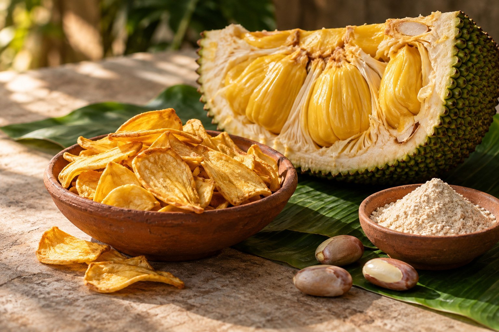

01 — JACKFRUIT / பலாTHE WHOLE-FRUIT STORY
Golden fruit.
Endless potential.
Young fruit for savoury cooking. Ripe bulbs for chips and preserves. Seeds for flour. Jackfruit has a place in more than one part of the pantry.
01 Chips & dried fruit02 Fruit & seed flours03 Jam, pickle & tender jackfruit